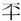

春秋公羊传卷十一
僖公中
僖公八年
春，王正月，公会王人、齐侯、宋公、卫侯、许男、曹伯、陈世子款、郑世子华盟于洮。王人者何？微者也。曷为序乎诸侯之上？先王命也。郑伯乞盟。乞盟者何？处其所而请与也。其处其所而请与奈何？盖酌之也。
夏，狄伐晋。
秋七月，禘于太庙，用致夫人。用者何？用者不宜用也。致者何？致者不宜致也。禘用致夫人，非礼也。夫人何以不称姜氏？贬。曷为贬？讥以妾为妻也。其言以妾为妻奈何？盖胁于齐媵女之先至者也。
冬十有二月丁未，天王崩。
僖公九年
春，王三月丁丑，宋公御说卒。何以不书葬？为襄公讳也。
夏，公会宰周公、齐侯、宋子、卫侯、郑伯、许男、曹伯于葵丘。宰周公者何？天子之为政者也。
秋七月乙酉，伯姬卒。此未适人何以卒？许嫁矣。妇人许嫁，字而笄之，死则以成人之丧治之。
九月戊辰，诸侯盟于葵丘。桓之盟不日，此何以日？危之也。何危尔？贯泽之会，桓公有忧中国之心，不召而至者江人、黄人也。葵丘之会，桓公震而矜之，叛者九国。震之者何？犹曰振振然。矜之者何？犹曰莫若我也。
甲戌，晋侯诡诸卒。
冬，晋里克弑其君之子奚齐。此未逾年之君，其言弑其君之子奚齐何？杀未逾年君之号也。
僖公十年
春，王正月，公如齐。
狄灭温。
温子奔卫。
晋里克弑其君卓子及其大夫荀息。及者何？累也。弑君多矣，舍此无累者乎？曰：“有孔父、仇牧皆累也。”舍孔父、仇牧无累者乎？曰：“有。”有则此何以书？贤也。何贤乎荀息？荀息可谓不食其言矣。其不食其言奈何？奚齐、卓子者，骊姬之子也，荀息傅焉。骊姬者，国色也。献公爱之甚，欲立其子，于是杀世子申生。申生者，里克傅之。献公病将死，谓荀息曰：“士何如则可谓之信矣？”荀息对曰：“使死者反生，生者不愧乎其言，则可谓信矣。”献公死，奚齐立。里克谓荀息曰：“君杀正而立不正，废长而立幼，如之何？愿与子虑之。”荀息曰：“君尝讯臣矣，臣对曰：‘使死者反生，生者不愧乎其言，则可谓信矣’”。里克知其不可与谋，退弑奚齐。荀息立卓子，里克弑卓子，荀息死之。荀息可谓不食其言矣。
夏，齐侯，许男伐北戎。
晋杀其大夫里克。里克弑二君，则曷为不以讨贼之辞言之？惠公之大夫也。然则孰立惠公？里克也。里克杀奚齐、卓子，逆惠公而入。里克立惠公，则惠公曷为杀之？惠公曰：“尔既杀夫二孺子矣，又将图寡人，为尔君者，不亦病乎？”于是杀之。然则曷为不言惠公之入？晋之不言出入者，踊为文公讳也。齐小白入于齐，则曷为不为桓公讳？桓公之享国也长，美见乎天下，故不为之讳本恶也。文公之享国也短，美未见乎天下，故为之讳本恶也。
秋七月。
冬，大雨雹。何以书？记异也。
僖公十一年
春，晋杀其大夫郑父。
夏，公及夫人姜氏会齐侯于阳谷。
秋八月，大雩。
冬，楚人伐黄。
僖公十二年
春，王三月庚午，日有食之。
夏，楚人灭黄。
秋七月。
冬十有二月丁丑，陈侯处臼卒。
僖公十三年
春，狄侵卫。
夏四月，葬陈宣公。
公会齐侯、宋公、陈侯、卫侯、郑伯、许男、曹伯于咸。
秋九月，大雩。
冬，公子友如齐。
僖公十四年
春，诸侯城缘陵。孰城之？城杞也。曷为城杞？灭也。孰灭之？盖徐、莒胁之。曷为不言徐、莒胁之？为桓公讳也。曷为为桓公讳？上无天子，下无方伯，天下诸侯有相灭亡者，桓公不能救，则桓公耻之也。然则孰城之？桓公城之。曷为不言桓公城之？不与诸侯专封也。曷为不与？实与而文不与。文曷为不与？诸侯之义不得专封也。诸侯之义不得专封，则其曰实与之何？上无天子，下无方伯，天下诸侯有相灭亡者，力能救之，则救之可也。
夏六月，季姬及鄫子遇于防，使鄫子来朝。鄫子曷为使乎季姬来朝？内辞也。非使来朝，使来请己也。
秋八月辛卯，沙鹿崩。沙鹿者何？河上之邑也。此邑也，其言崩何？袭邑也。沙鹿崩何以书？记异也。外异不书，此何以书？为天下记异也。
狄侵郑。
冬，蔡侯肹卒。
僖公十五年
春，王正月，公如齐。
楚人伐徐。
三月，公会齐侯、宋公、陈侯、卫侯、郑伯、许男、曹伯盟于牡丘，遂次于匡。公孙敖率师及诸侯之大夫救徐。
夏五月，日有食之。
秋七月，齐师、曹师伐厉。
八月，螽。
九月，公至自会。桓公之会不致，此何以致？久也。
季姬归于鄫。
己卯晦，震夷伯之庙。晦者何？冥也。震之者何？雷电击夷伯之庙者也。夷伯者曷为者也？季氏之孚也。季氏之孚则微者，其称夷伯何？大之也。曷为大之？天戒之，故大之也。何以书？记异也。
冬，宋人伐曹。
楚人败徐于娄林。
十有一月壬戌，晋侯及秦伯战于韩，获晋侯。此偏战也，何以不言师败绩？君获不言师败绩也。
僖公十六年
春，王正月戊申朔，陨石于宋五。是月，六鹢退飞过宋都。曷为先言陨而后言石？陨石记闻，闻其磌然，视之则石，察之则五。是月者何？仅逮是月也。何以不日？晦日也。晦则何以不言晦？《春秋》不书晦也。朔有事则书，晦虽有事不书。曷为先言六而后言鹢？六鹢退飞，记见也，视之则六，察之则鹢，徐而察之则退飞。五石六鹢何以书？记异也。外异不书，此何以书？为王者之后记异也。
三月壬申，公子季友卒。其称季友何？贤也。
夏四月丙申，鄫季姬卒。
秋七月甲子，公孙慈卒。
冬十有二月，公会齐侯、宋公、陈侯、卫侯、郑伯、许男、邢侯、曹伯于淮。
僖公十七年
春，齐人、徐人伐英氏。
夏，灭项。孰灭之？齐灭之。曷为不言齐灭之？为桓公讳也。《春秋》为贤者讳。此灭人之国，何贤尔？君子之恶恶也疾始，善善也乐终。桓公尝有继绝存亡之功，故君子为之讳也。
秋，夫人姜氏会齐侯于卞。
九月，公至自会。
十有二月乙亥，齐侯小白卒。
僖公十八年
春，王正月，宋公会曹伯、卫人、邾娄人伐齐。
夏，师救齐。
五月戊寅，宋师及齐师战于甗，齐师败绩。战不言伐，此其言伐何？宋公与伐而不与战，故言伐。《春秋》伐者为客，伐者为主。曷为不使齐主之？与襄公之征齐也。曷为与襄公之征齐？桓公死，竖刁，易牙争权不葬，为是故伐之也。
狄救齐。
秋八月丁亥，葬齐桓公。
冬，邢人、狄人伐卫。
僖公十九年
春，王三月，宋人执滕子婴齐。
夏六月，宋人、曹人、邾娄人盟于曹南。鄫子会于邾娄。其言会盟何？后会也。己酉，邾娄人执鄫子用之。恶乎用之？用之社也。其用之社奈何？盖叩其鼻以血社也。
秋，宋人围曹。
卫人伐邢。
冬，公会陈人、蔡人、楚人、郑人盟于齐。
梁亡，此未有伐者，其言梁亡何？自亡也。其自亡奈何？鱼烂而亡也。
僖公二十年
春，新作南门。何以书？讥。何讥尔？门有古常也。
夏，郜子来朝，郜子者何？失地之君也。何以不名？兄弟辞也。
五月乙巳，西宫灾。西宫者何？小寝也。小寝则曷为谓之西宫？有西宫则有东宫矣。鲁子曰：“以有西宫，亦知诸侯之有三宫也。”西宫灾何以书？记异也。
郑人入滑。
秋，齐人、狄人盟于邢。
冬，楚人伐随。
僖公二十一年
春，狄侵卫。
宋人、齐人、楚人盟于鹿上。
夏，大旱。何以书？记灾也。
秋，宋公、楚子、陈侯、蔡侯、郑伯、许男、曹伯会于霍，执宋公以伐宋。孰执之？楚子执之。曷为不言楚子执之？不与夷狄之执中国也。
冬，公伐邾娄。
楚人使宜申来献捷。此楚子也，其称人何？贬。曷为贬？为执宋公贬。曷为为执宋公贬？宋公与楚子期以乘车之会，公子目夷谏曰：“楚，夷国也，强而无义，请君以兵车之会往。”宋公曰：“不可。吾与之约以乘车之会，自我为之，自我堕之，曰不可。”终以乘车之会往，楚人果伏兵车，执宋公以伐宋。宋公谓公子目夷曰：“子归守国矣，国，子之国也。吾不从子之言，以至乎此。”公子目夷复曰：“君虽不言国，国固臣之国也。”于是归设守械而守国。楚人谓宋人曰：“子不与我国，吾将杀子君矣。”宋人应之曰：“吾赖社稷之神灵，吾国已有君矣。”楚人知虽杀宋公犹不得宋国，于是释宋公。宋公释乎执，走之卫。公子目夷复曰：“国为君守之，君曷为不入？”然后逆襄公归。恶乎捷？捷乎宋？曷为不言捷乎宋。为襄公讳也。此围辞也，曷为不言其围？为公子目夷讳也。
十有二月癸丑，公会诸侯盟于薄。释宋公。执未有言释之者，此其言释之何？公与为尔也。公与为尔奈何？公与议尔也。